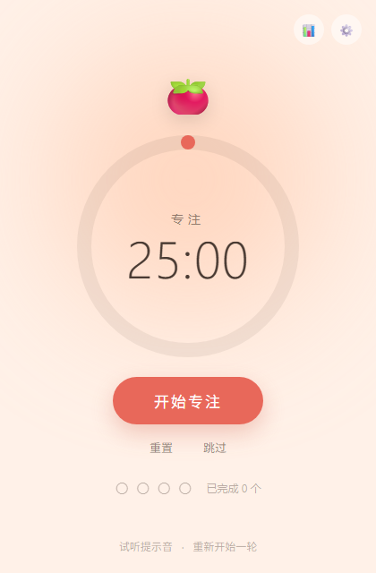
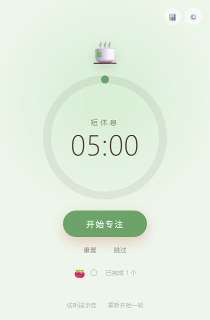
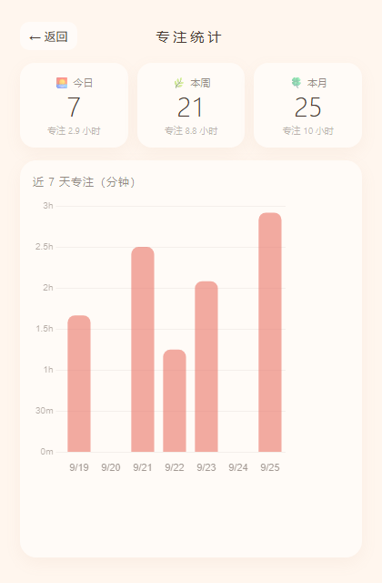
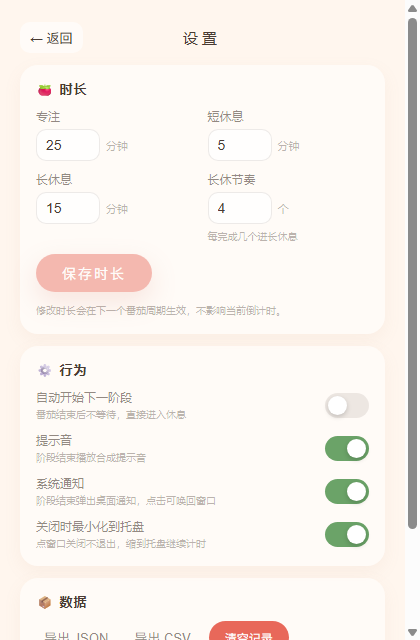

一款温馨治愈的番茄钟桌面应用。色温随阶段流转，进度用一圈柔和的环表示，完成几个番茄就点亮几颗小番茄。开源、免费，数据全部留在你自己的电脑上。
在线试用是同一套界面的网页版，无需安装、可直接开始计时；数据存在你浏览器的 localStorage 里，不联网、不上传。
托盘常驻、系统通知、原生保存对话框为桌面版专有 —— 便携版免安装、双击即用，Windows 10 / 11 x64。

不靠弹窗提醒「该休息了」，而是让屏幕本身的颜色替你换一口气。专注是暖橘，短休是鼠尾草绿，长休是雾蓝，切换时 0.9 秒柔和过渡。
默认 25 分钟。呼吸动画与光晕只在运行时出现，暂停即静止。
#FFF1E8
默认 5 分钟。每完成一个番茄自动进入，帮你把注意力接回来。
#EEF6EC
默认 15 分钟。每完成 4 个番茄安排一次，节奏可在设置里改。
#EAF1F7
点关闭不会退出，而是缩到系统托盘继续跑。阶段结束弹一条原生系统通知，点击唤回窗口；如果你正看着它，就自动不打扰。

每个走完的番茄都会记进本地历史。统计看板按今日、本周、本月汇总番茄数与专注时长，并用柱状图画出近 7 天的节奏。

25/5/15 只是默认值。三档时长、每几个番茄进一次长休息、阶段结束后是否自动开始、提示音、通知、关窗行为，都能在设置面板里改，改完立即持久化。

一个番茄钟能做的功能没有边界，但它可以有。以下是这个项目刻意坚持的几件事。
历史记录就是一个 JSON 文件，躺在你自己的电脑上。不联网、无账号、无遥测，卸载重装也不丢。想多设备共用？把它改存到 Dropbox / iCloud / Syncthing 的同步目录就行 —— 不需要我们替你保管。
默认硬件加速，运行态 CPU 占用不到 10%。若显卡子进程崩溃，下一次启动自动降级软件渲染保底，之后回到硬件模式。
阶段怎么切换、何时长休、统计怎么聚合、CSV 怎么转义，全部是无框架依赖的纯逻辑，由 17 组单元测试覆盖。
不做待办全家桶，不做云账号体系。
陪伴感、隐私、开源是这个项目的三样资产。其余的功能扩张，都要先过这三样。